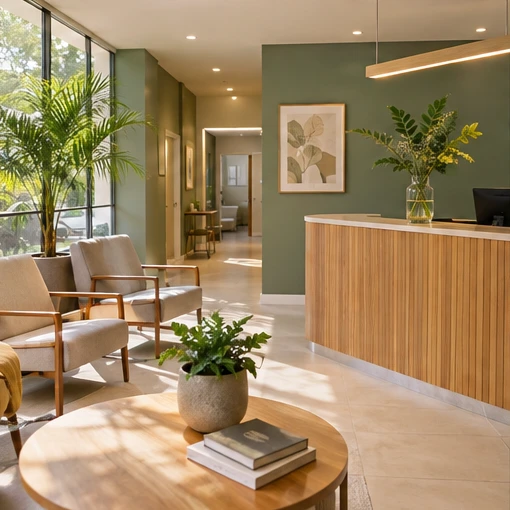

Escuta
Espaço para contar sua história e esclarecer dúvidas.
Nossa história
Uma clínica de bairro pensada para aproximar pacientes e profissionais.

Campinas · SP
Na história deste projeto, a Bem Viver nasceu em Campinas quando quatro médicos decidiram compartilhar um espaço de atendimento. A ideia era simples: deixar tempo na agenda para ouvir cada pessoa.
Oferecer acompanhamento próximo, com respeito às escolhas de cada paciente.
Espaço para contar sua história e esclarecer dúvidas.
Privacidade e atenção às necessidades individuais.
Acompanhamento organizado entre uma consulta e outra.